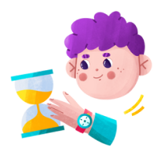
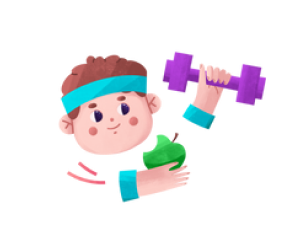
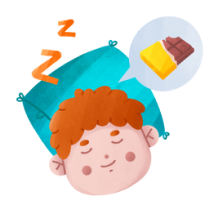
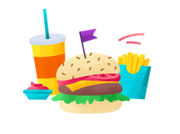
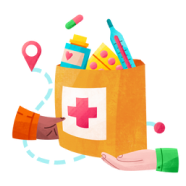

Requisitos para poder donar
La mayoría de las personas pueden donar sangre si gozan de buena salud. A continuación se presentan algunos requisitos básicos para hacerse donante de sangre.

Tener entre 16 y 65 años

Pesar más de 50 kilos

2 meses desde la última donación de sangre

Dormir más de 6 horas

Desayunar y/o almorzar

Tener buen estado de salud